性能实验操作验证
Test模式进入两项指定任务，实验操作使用Viewport输入。实际模拟、原判定；不代表前置旅程、原生输入或真人理解验收。修复前后画面分别标注，1280×720。
修复后 · en-access-order-comparison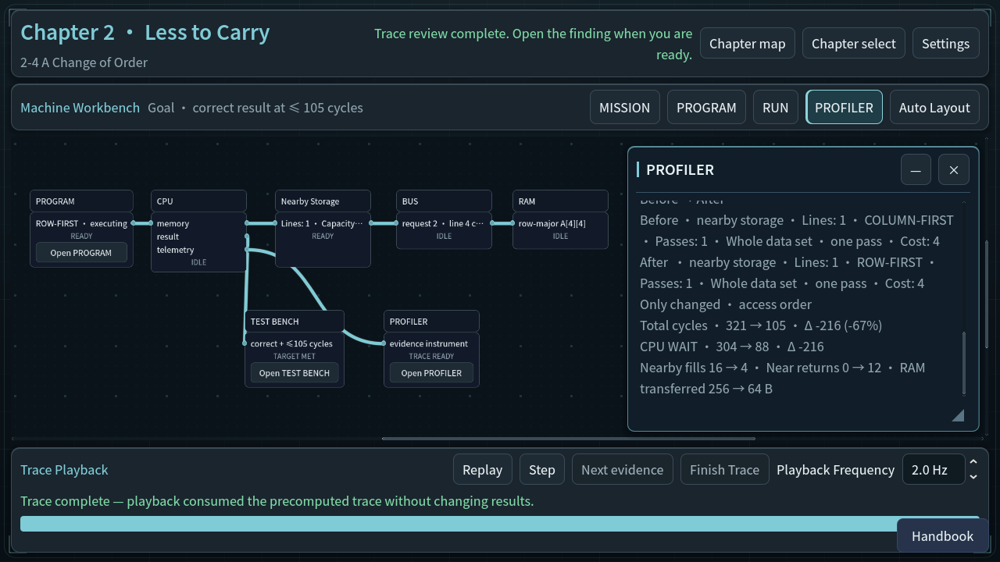
修复后 · en-access-order-completion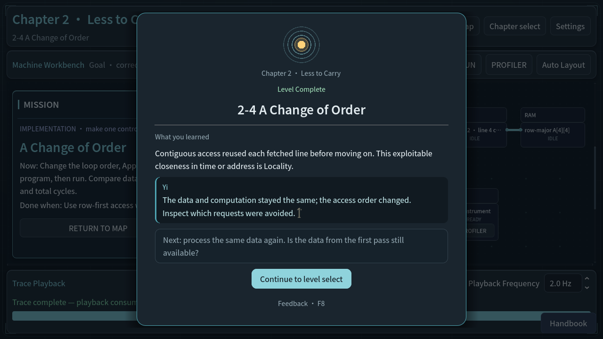
修复后 · en-access-order-over-target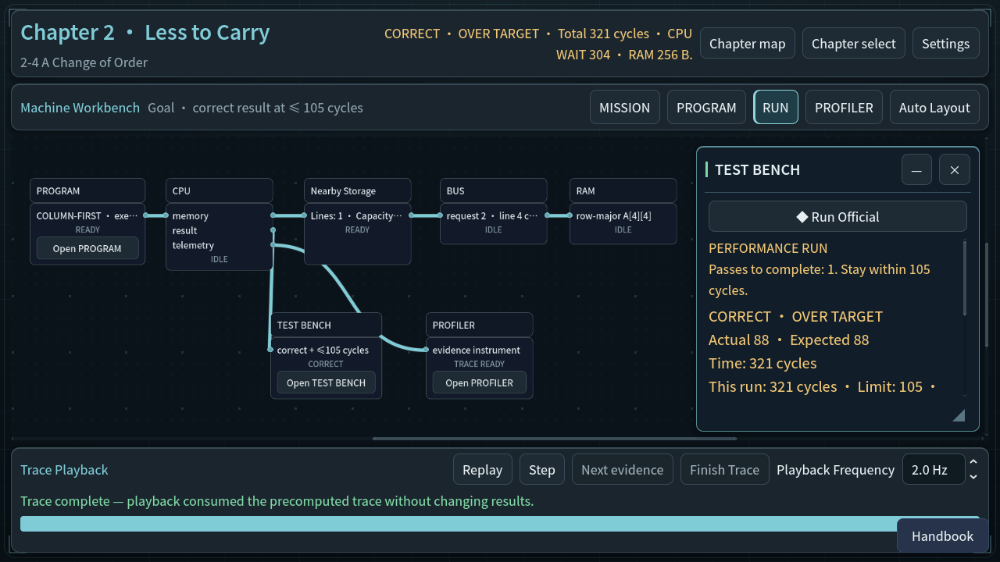
修复后 · en-access-order-target-met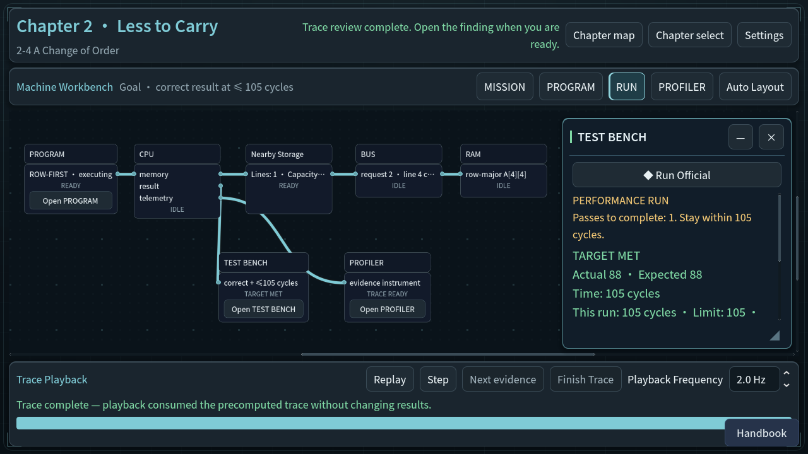
修复后 · en-access-order-unapplied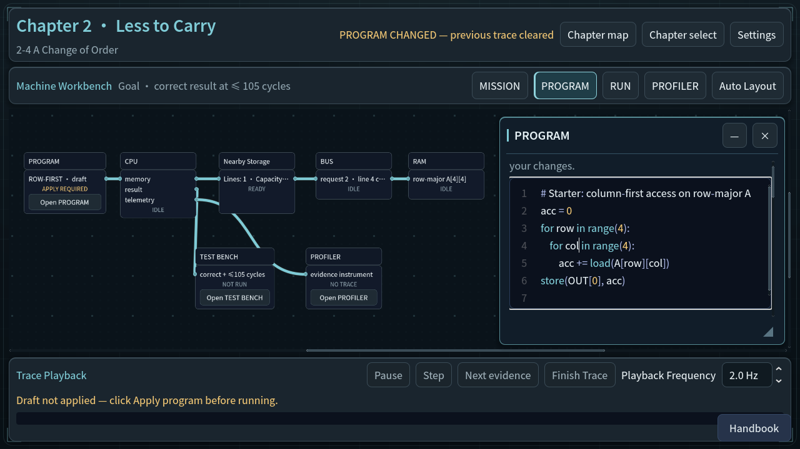
修复后 · en-cpu-baseline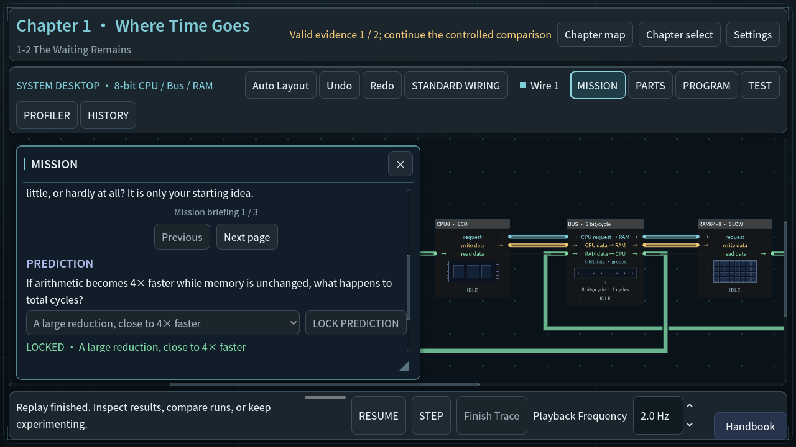
修复后 · en-cpu-controlled-comparison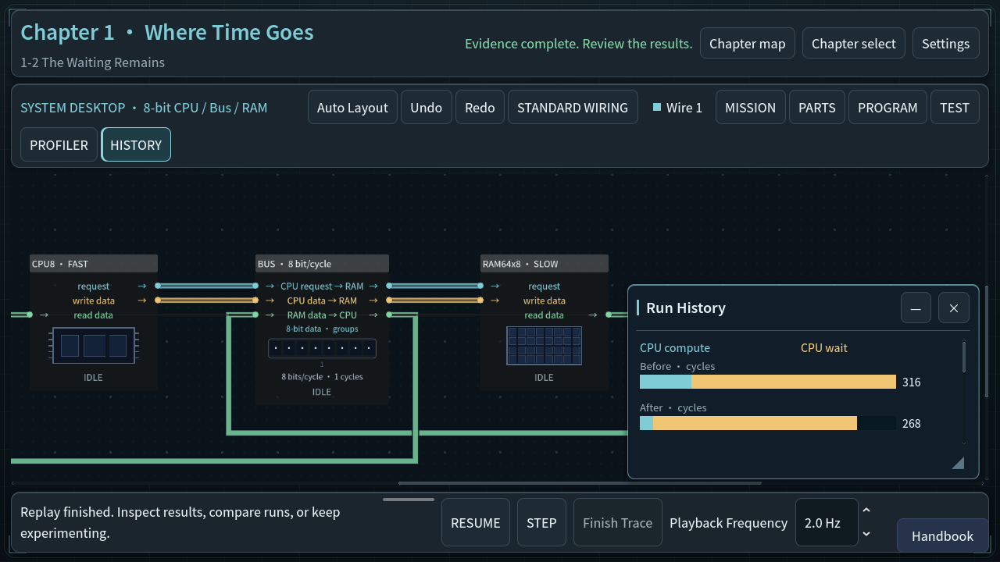
修复后 · en-cpu-debug-not-complete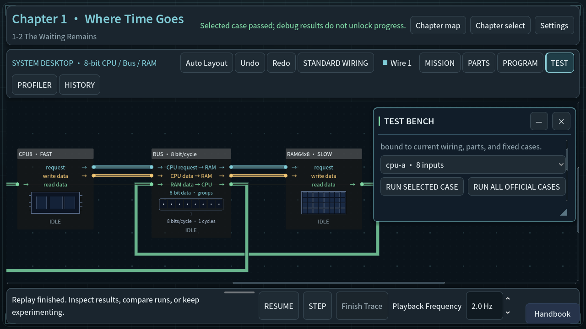
修复后 · zh_CN-access-order-comparison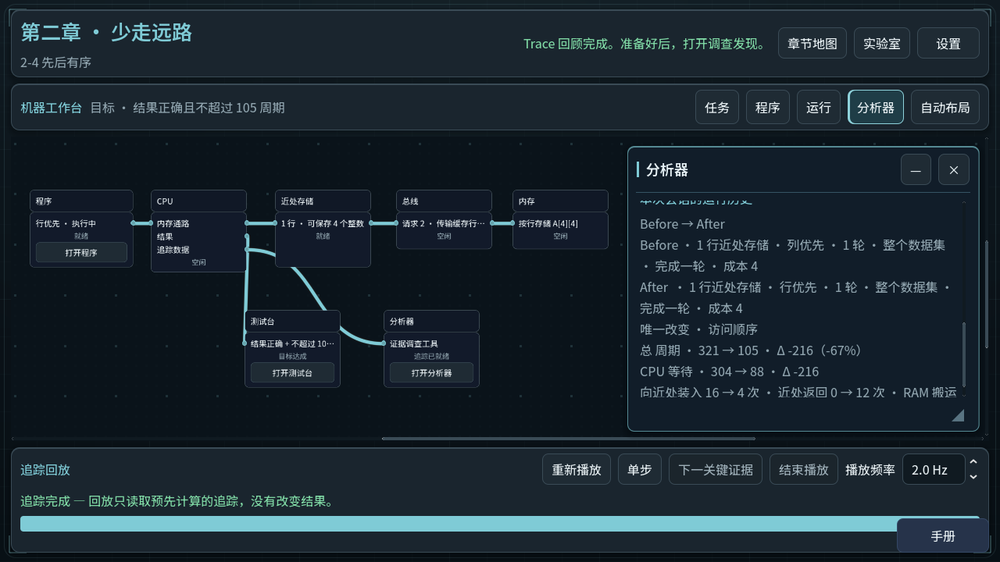
修复后 · zh_CN-access-order-completion修复后 · zh_CN-access-order-over-target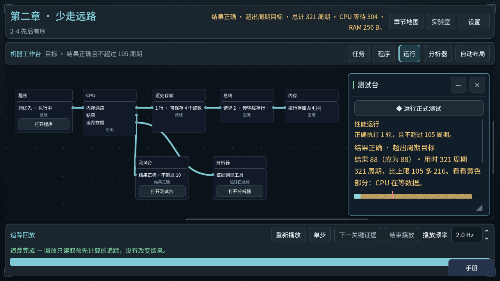
修复后 · zh_CN-access-order-target-met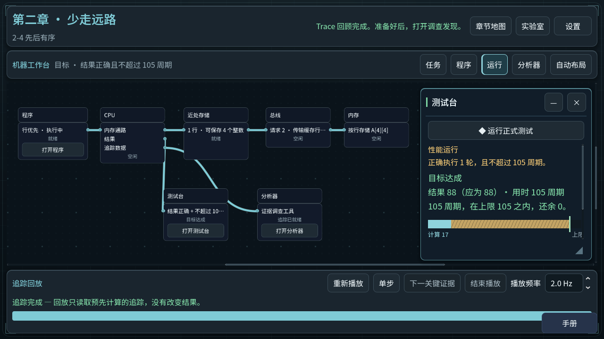
修复后 · zh_CN-access-order-unapplied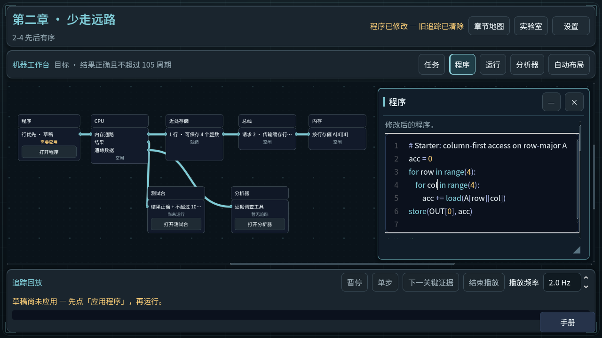
修复前：回放控件超出窗口 · zh_CN-before-access_order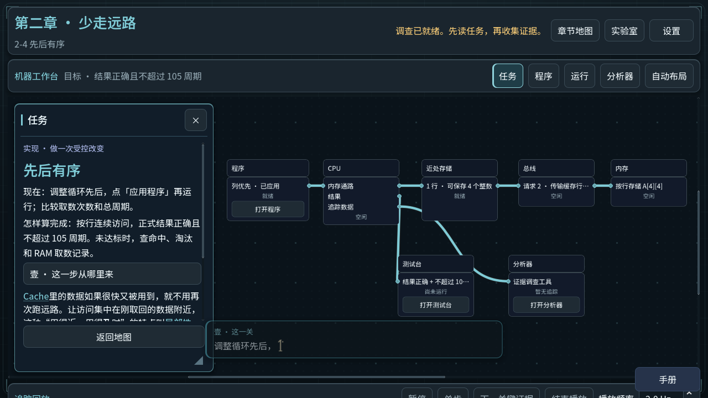
修复前：回放控件超出窗口 · zh_CN-before-cpu_speed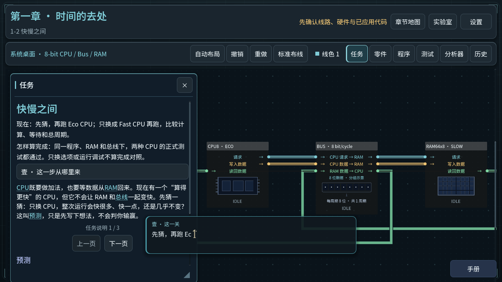
修复后 · zh_CN-cpu-baseline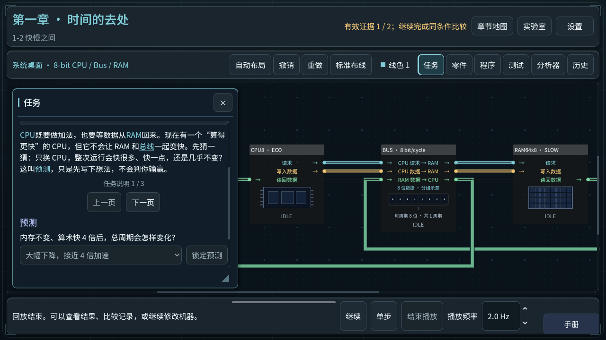
修复后 · zh_CN-cpu-controlled-comparison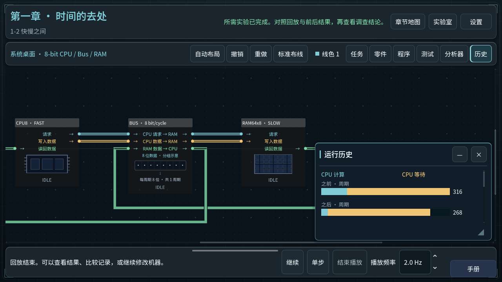
修复后 · zh_CN-cpu-debug-not-complete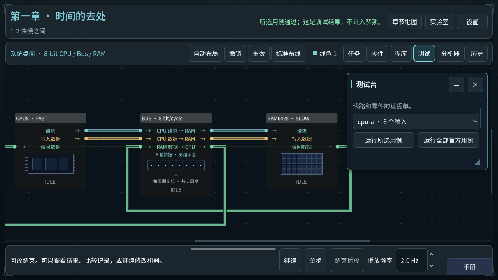